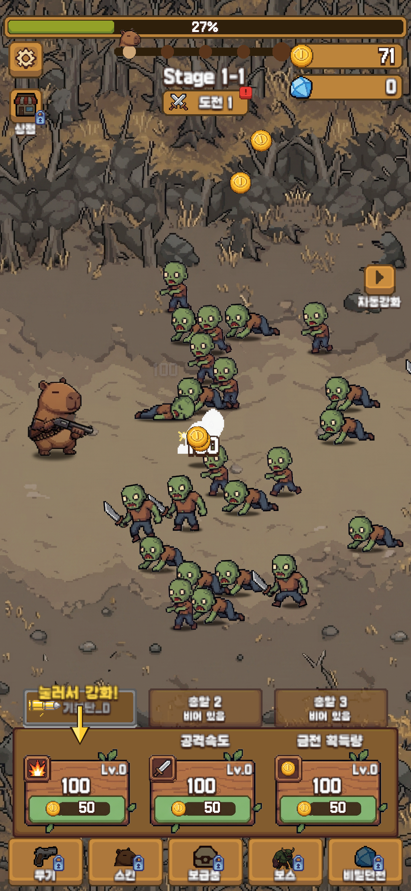
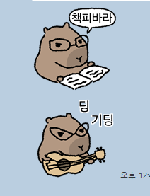
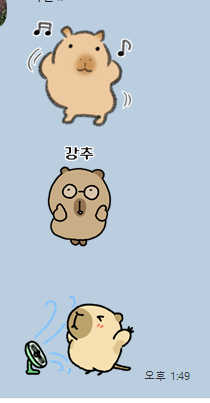
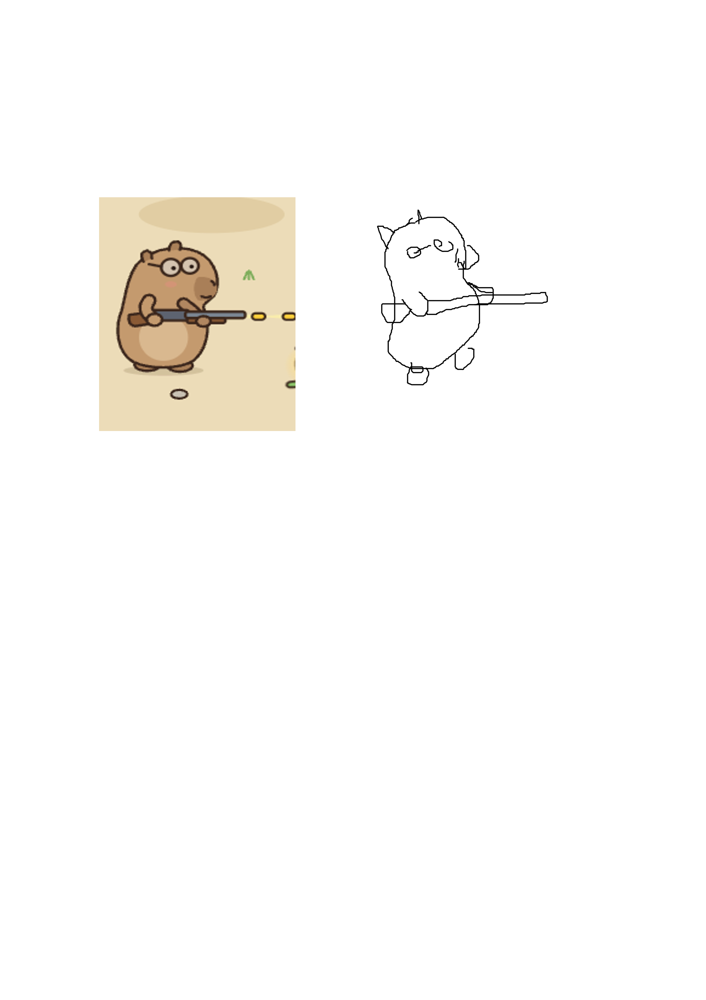
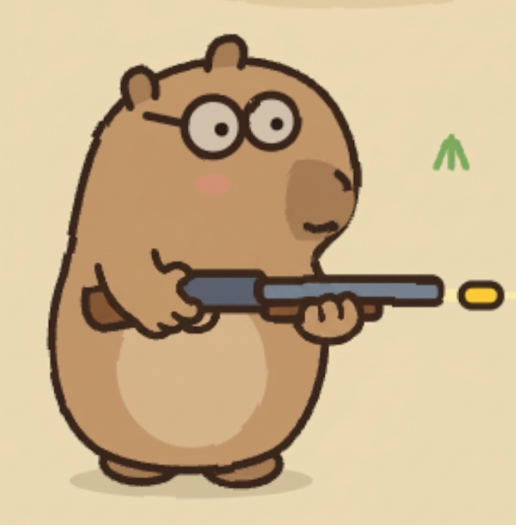
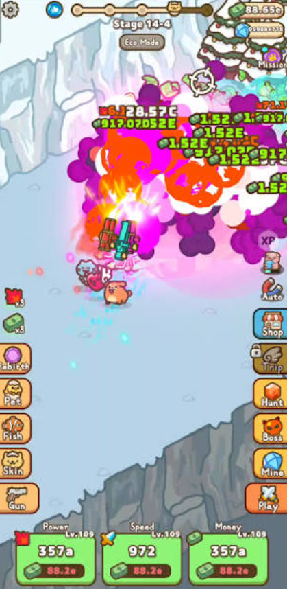

11-05: 카피바라를 뒷발로 선 자세로(이미지_02) · 손 모양은 주신 그림(이미지_04) 그대로 · 안경을 벗기고 눈은 "- -". 추가 요청의 메인 캐릭터 이미지(안경 쓴 카피바라 낙서)와 이미지 컨셉(밝은 파스텔 · 둥근 UI) 느낌으로 전투 화면 한 장을 새로 그려 봤습니다.
게임에는 아직 넣지 않았습니다. 그림은 모두 새로 그린 것(벡터)이고, 화면 배치는 지금 게임과 같습니다.
1. 지금 화면 ↔ 새 화풍 샘플
지금 (도트 그림)

새 화풍 샘플
참고로 주신 그림





2. 캐릭터 크게
굵은 갈색 선 + 단색 칠 + 살짝 흔들리는 선(손그림 느낌). 좀비는 피부·옷 색만 바꿔 종류를 나눌 수 있습니다.
3. 정해 주실 것
① 이 방향이 맞나요? 밝기 · 선 굵기 · 캐릭터 비율 · 배경 색 중 바꾸고 싶은 것을 말씀해 주세요 (예: "배경은 더 어둡게", "카피바라 더 크게", "눈 졸린 눈으로").
② 글꼴추천: 주아 — 오늘 고른 갈무리11(도트 글꼴)은 지금 도트 그림에는 맞지만 새 화풍과는 어울리지 않습니다. 샘플 글자는 주아(둥글고 두꺼운 무료 글꼴)입니다. 그림을 바꾸면 글꼴도 같이 바꾸는 것을 추천합니다.
③ 메인 캐릭터 그림의 출처 — 주신 그림이 채팅 이모티콘 캡처로 보입니다. 다른 작가의 이모티콘이면 그 캐릭터를 그대로 따라 그리면 안 됩니다(저작권). 샘플은 "서 있는 카피바라"라는 아이디어만 쓰고 모양은 새로 그렸습니다. 직접 그리신 그림이면 더 가깝게 맞출 수 있으니 알려 주세요.
④ 만드는 방법추천: 가
가. 제가 벡터로 직접 그림 (이 샘플 방식) — 선·색이 모두 같은 규칙이라 통일감이 좋고, 좀비·카피바라 걷기 뼈대에 필요한 부위별 그림(머리·몸·팔·다리)을 바로 나눠 만들 수 있습니다. 대신 그림이 단순한 편입니다.
나. AI 그림 도구로 직접 뽑아 주심 — 더 풍부한 그림이 나오지만 장마다 모양이 달라지기 쉽고, 부위 나누기·배경 지우기를 제가 다시 해야 합니다. 배경 그림에만 쓰는 것도 방법입니다.
⑤ 언제 넣을지추천: 출시 일정은 그대로, 새 그림은 업데이트로 — 바꿀 그림이 많아(아래 표) 며칠 걸립니다. 11-07 프로덕션 신청 · 출시는 지금 그림으로 진행하고, 새 그림이 다 되면 업데이트 빌드로 넣는 것을 추천합니다. 출시 전에 꼭 바꾸고 싶으시면 일정을 다시 짜겠습니다.
4. 바꿔야 할 그림 (지금 게임 기준)
종류
개수
메모
카피바라 + 스킨
기본 1 + 스킨 18
뼈대 걷기용 부위 그림 · 총 잡는 자세
좀비
12종 + 보스
부위 그림(머리·몸·팔·다리) · 맞을 때 번쩍임은 지금 셰이더 그대로 씀
배경
1장 (챕터마다 색만 바뀜)
원하면 챕터 테마별(숲·눈·사막…) 여러 장
총알 · 폭발 · 금화
총알 13 · 이펙트
등급 색·네온 오오라는 코드라 그대로
UI (버튼 · 판 · 창 · 아이콘)
UI 그림 약 70
창 테두리 · 버튼 · 아이콘 전부
보급품 아이콘
25
앱 아이콘 · 스토어 그래픽 · 스크린샷
아이콘 1 · 그래픽 1 · 스크린샷
tools/app_icon_gen.py · store_graphics.py 로 다시 만듦
진행 순서 추천: ① 방향 확정 → ② 카피바라·좀비(전투 화면에서 가장 많이 보임) → ③ 배경·총알 → ④ UI → ⑤ 아이콘·스토어 그림. 단계마다 전·뒤 캡처로 확인받고 넘어갑니다.